Metade do ano é rio, a outra metade é campo. Aqui está o Pantanal de verdade: a planície que enche e esvazia, a estrada que termina na beira do rio das onças, a água que escurece na cheia e os peixes que sobem o rio para desovar.
O Pantanal ocupa cerca de 150 mil quilômetros quadrados em Mato Grosso e Mato Grosso do Sul, na bacia do rio Paraguai. É a maior planície inundável do planeta, e quase plana: a altitude média fica em torno de cem metros. Na época das chuvas, a água sobe, transborda dos rios e cobre boa parte da planície. Na seca, ela volta para os rios, os corixos e as baías, e o campo reaparece.
É esse vaivém da água que manda em tudo. A água anda devagar pela planície: no sul, as maiores cheias chegam quatro a cinco meses depois do pico das chuvas. Os bichos, as plantas e as pessoas seguem esse calendário.
A gente pantaneira vive do gado há muito tempo. A pecuária começou em meados do século XVIII, com o gado pantaneiro, ou tucura, descendente das raças trazidas por portugueses e espanhóis. Depois de séculos sob seleção natural, esse gado ficou menor e muito resistente à seca e à cheia. No começo do século XX chegou o zebu, de origem indiana, com a ajuda da Estrada de Ferro Noroeste do Brasil, e os cruzamentos quase apagaram o tucura. Hoje a Embrapa Pantanal ajuda a conservar os últimos rebanhos, como o da fazenda Nhumirim, na Nhecolândia.
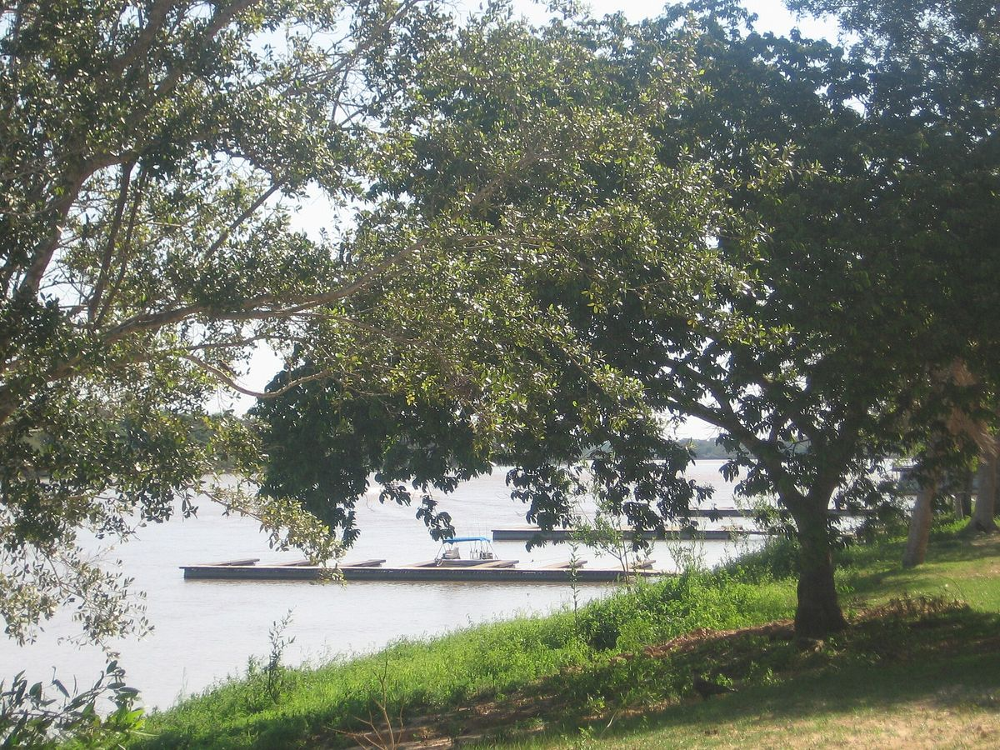
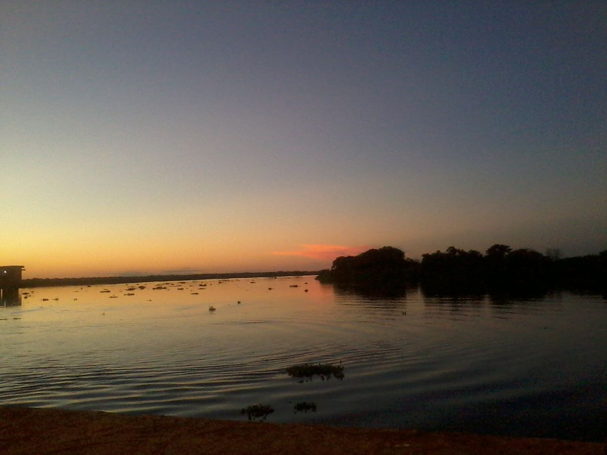
A Transpantaneira, a MT-060, sai de Poconé e vai até Porto Jofre, na beira do rio Cuiabá. São cerca de 147 quilômetros de terra, em cima de aterros, cruzando campos, corixos e baías sobre dezenas de pontes. As pontes não estão ali por enfeite: deixam a água da cheia passar de um lado para o outro da pista.
Em Porto Jofre a estrada acaba e o barco assume. O turismo dali já foi quase só de pesca, e com o tempo ganhou outro motivo: ver onças-pintadas na beira do rio. A procura é maior na seca, quando as praias e os barrancos ficam expostos e os barcos passam pelos lugares que os bichos usam.
O cenário do Pantanal junta os bichos mais famosos da planície, e o seu companheiro de barco é um jacaré-do-pantanal. Todos eles existem de verdade, e as fotos abaixo foram feitas no Pantanal.
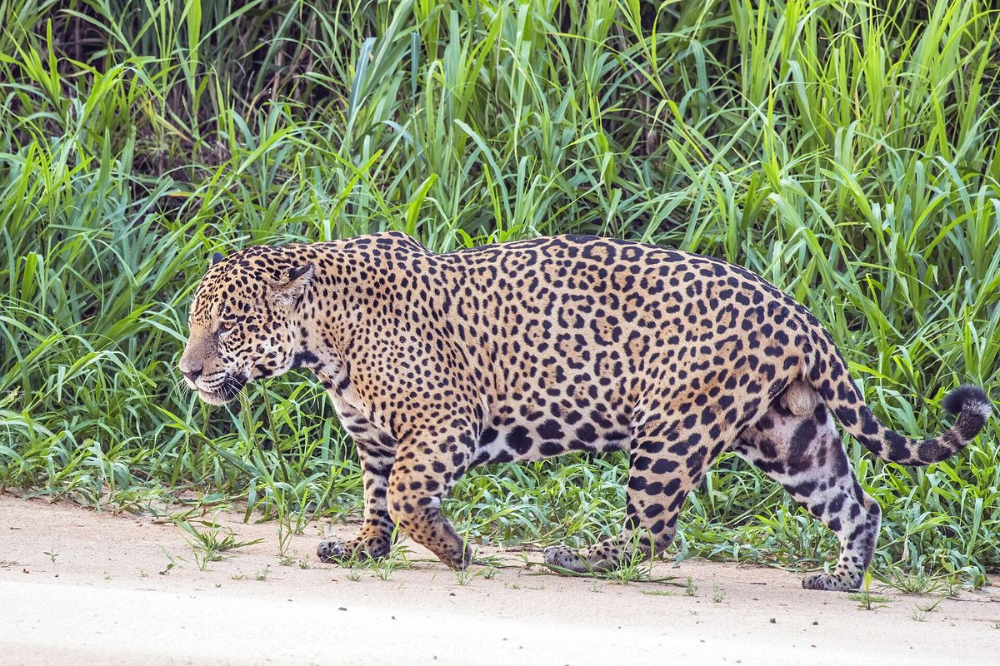
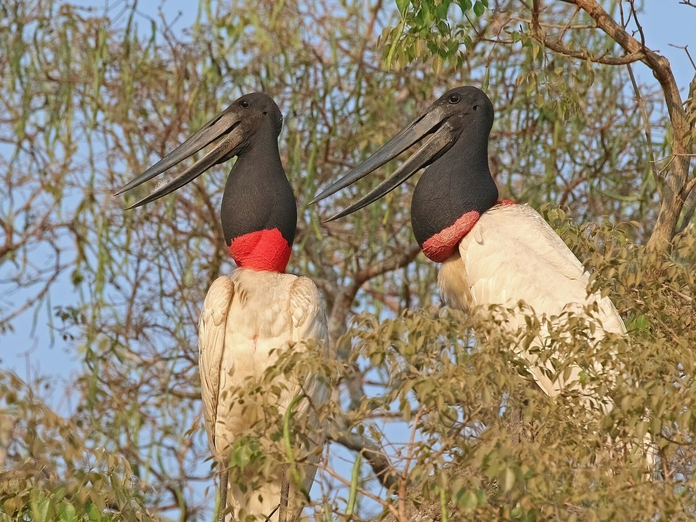
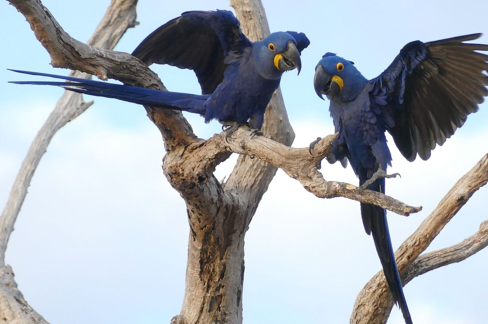
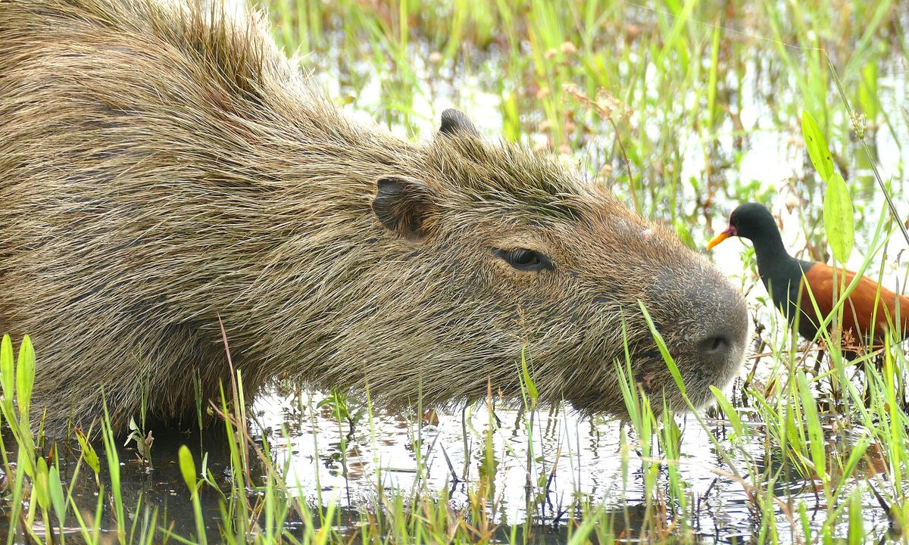
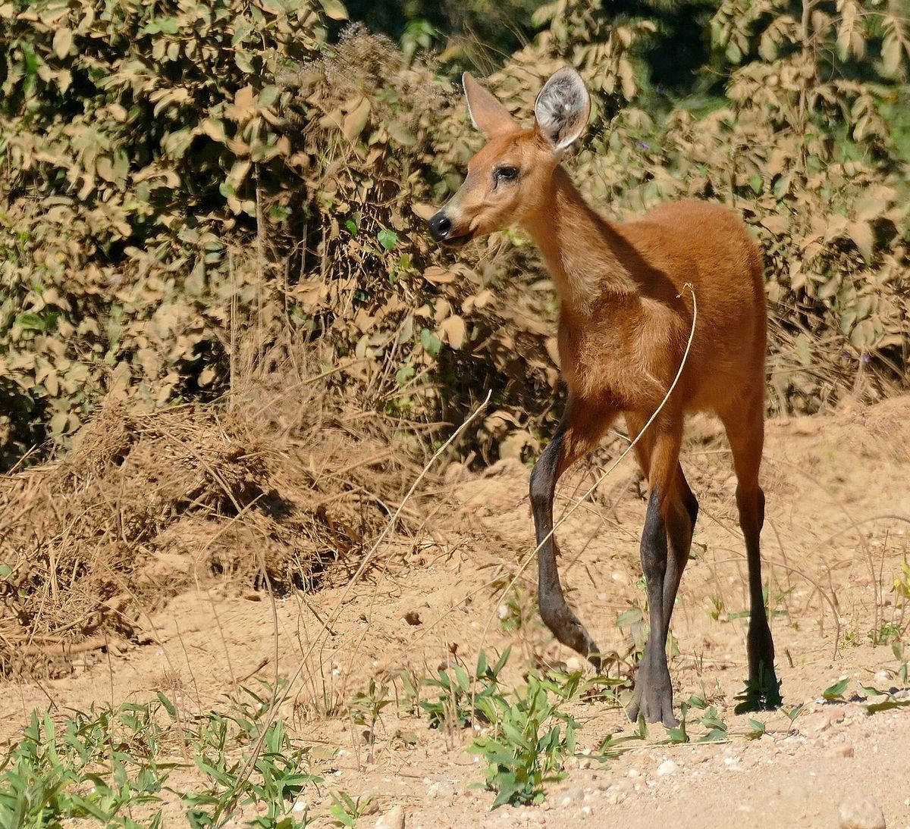
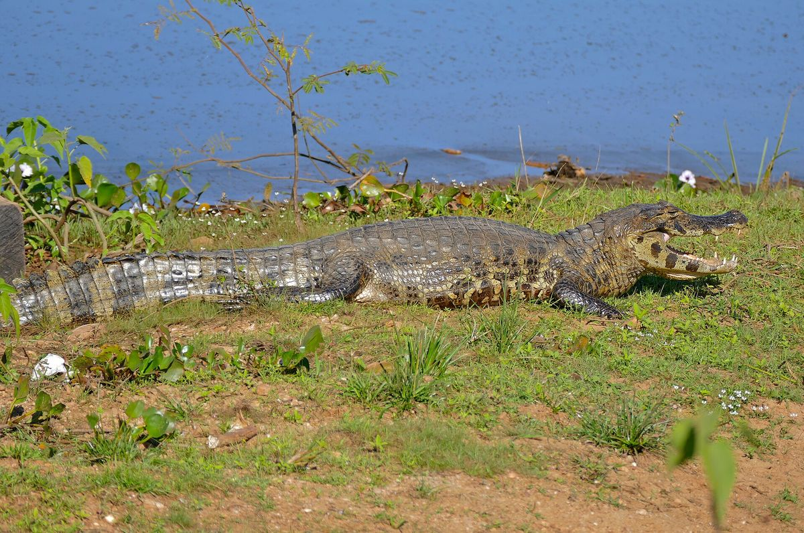
No Pantanal ela vive na beira dos rios, e na seca fica mais fácil de ver, quando praias e barrancos aparecem. O território de um macho chega a uns 345 quilômetros quadrados. É uma das espécies ameaçadas que o Parque Nacional do Pantanal Matogrossense, perto de Porto Jofre, protege.
A ave símbolo do Pantanal e a maior ave voadora de lá: chega perto de três metros de asa aberta. O ninho fica no alto das árvores, é reaproveitado e aumentado ano após ano, e passa de um metro e oitenta de largura. Come peixe, e também peixe morto, o que ajuda a limpar a água na seca.
A maior ave da família dos papagaios, com até um metro do bico à ponta da cauda. Em 95% das vezes faz o ninho num oco do manduvi, uma árvore do Pantanal que só tem buraco do tamanho certo depois dos sessenta anos. Nos anos 1980 restavam umas 2.500 araras; mais de três décadas de trabalho do Instituto Arara Azul ajudaram a população a chegar a cerca de seis mil.
Um dos maiores roedores do mundo, e especialmente abundante no Pantanal. Vive em grupo e precisa de três coisas: água, campo para pastar e capão de mata. Numa fazenda da Nhecolândia, os pesquisadores da Embrapa contaram 325 capivaras divididas em 38 grupos.
As maiores populações de hoje estão no Pantanal. Come sobretudo plantas aquáticas e plantas que aguentam solo encharcado, como a ninfeia, e brotos de arbustos. A espécie é considerada vulnerável no Brasil.
A fêmea monta o ninho com folhas e gravetos, na mata ou em cima da vegetação flutuante, e fica de guarda. É a temperatura que decide o sexo dos filhotes: ninho mais frio dá fêmeas, ninho mais quente dá principalmente machos. Depois que eles nascem, a mãe fica por perto até um ano.
Os doze peixes do Pantanal no jogo, do pacu-peva ao Minhocão. Todos vivem de verdade na bacia do rio Paraguai.
Um parente pequeno do pacu, de uns 25 centímetros. Come planta, migra dentro dos rios e depende muito das áreas que alagam na cheia. Vive no rio Paraguai e na parte baixa das bacias do Paraná e do Uruguai.
Anda em cardumes pequenos, com hierarquia entre elas. As maiores caçam de madrugada, no fim da tarde e à noite, e comem inseto, verme e peixe. Os dentes são trocados de um lado da boca por vez, e ela nunca fica sem mordida. Os ovos ficam presos em raízes submersas, e são guardados até nascer.
Vive na bacia do rio Paraguai e passa dos cinquenta centímetros. Come muita fruta: num estudo no rio Formoso, em Bonito, quase um terço do que ela tinha no estômago eram frutos e sementes. As sementes pequenas, como as do figo e da goiaba, passam inteiras, e a piraputanga as espalha pela beira do rio.
Bagre de fundo de lama, das partes fundas e calmas dos rios grandes, e bem raro. O jeito dos olhos e da boca serve para a tocaia: fica parado no fundo e ataca peixes e bichos do fundo. Passa dos sessenta centímetros.
Bagre liso e sem barba comprida, que gosta de remanso e de beira de rio com muita planta, onde a correnteza é fraca. Sai mais à noite e come peixe e crustáceo. Passa dos sessenta centímetros.
Peixe de escama da bacia do rio Paraguai, que passa dos sessenta centímetros e de cinco quilos. Os casais desovam em lugares de vegetação fechada. Está entre os peixes mais pescados de Mato Grosso do Sul, e em textos mais antigos aparece como Leporinus macrocephalus.
Um bagre de couro grosso, com uma fileira de placas ossudas, como botões, ao longo do lado do corpo. Vive no fundo e come de tudo: inseto, camarão, caramujo e um pouco de planta. Chega a uns setenta centímetros e a nove quilos.
Primo do abotoado, também com placas pontudas no lado do corpo. Sai à noite, anda em grupinhos e migra dentro dos rios. Gosta de fruta: na Amazônia, come muito o coquinho de uma palmeira da beira da água. As fêmeas são maiores que os machos e passam de sete quilos.
Peixe de corpo alto, cinza-escuro nas costas e de peito amarelado. Na cheia, entra na mata alagada para comer as castanhas e sementes que caem das árvores. Pode chegar a vinte quilos. Está entre os peixes mais pescados de Mato Grosso do Sul, e a espécie é considerada quase ameaçada.
Bagre de corpo comprido, que anda em cardume e come bichos do fundo. Migra dentro dos rios e pode passar de um metro. Vive nas bacias do Amazonas, do Orinoco e do Paraná, à qual o Pantanal pertence.
O grande bagre pintado do Pantanal, de listras escuras que formam uma rede no corpo, e o troféu de muito pescador pantaneiro. Num estudo no rio Cuiabá, a maior fêmea medida tinha 96 centímetros sem contar a cauda; as fêmeas crescem mais que os machos. Vive da Amazônia central à bacia do Paraná, e em textos mais antigos aparece como Pseudoplatystoma fasciatum.
O Minhocão é um mito das águas do Centro-Oeste, contado no Pantanal e em Mato Grosso: uma serpente tão grande quanto a largura do próprio rio, que, quando se irrita, derruba os barrancos dentro da água. O jogo a faz aparecer nas noites de lua cheia.
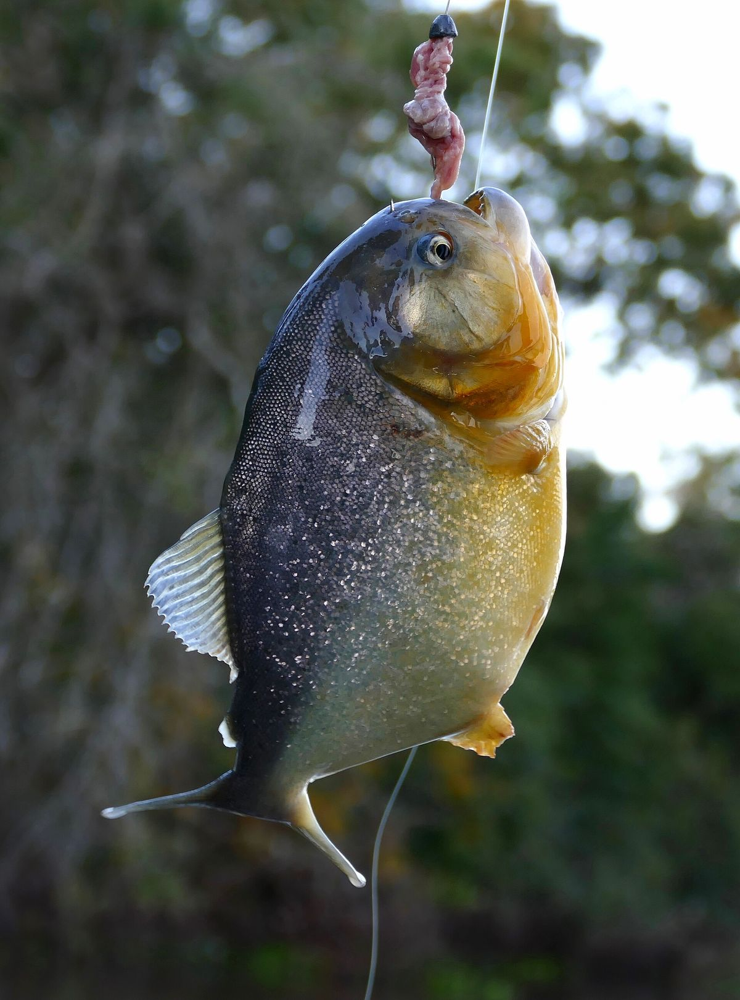
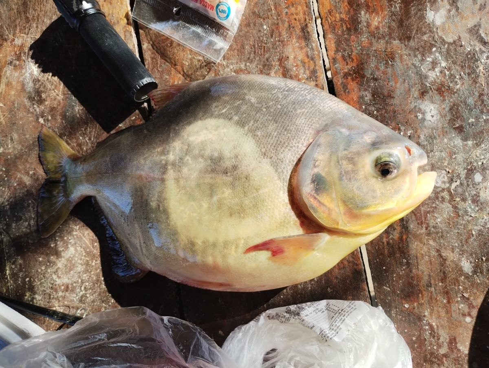
Todo ano, quando a cheia começa, a água do rio Paraguai muda de cor. A enchente invade o campo e a matéria das plantas das margens começa a se decompor. As bactérias que fazem esse trabalho gastam o oxigênio da água, que fica escura, avermelhada e ácida. Os pantaneiros chamam isso de dequada, ou decoada. Acontece de Cáceres, no norte, até Porto Murtinho, no sul, e é mais forte no rio Paraguai. Costuma começar no fim de março, com as primeiras águas.
Na dequada forte, falta ar para os peixes. Alguns fogem para baías de água limpa; os que ficam fracos são os "peixes tontos", e muitos morrem. É um fenômeno natural, e os peixes mortos viram comida para as garças e para outros bichos.
A piracema é a outra estação da água: é a época em que os peixes se reproduzem. Para eles terem sossego, a pesca nos rios de Mato Grosso do Sul fica fechada todo ano de 5 de novembro a 28 de fevereiro.
Muita gente trabalha para o Pantanal continuar cheio de vida. A Embrapa Pantanal, em Corumbá, pesquisa os bichos e os peixes da planície há décadas. Ela montou um banco de sêmen de peixes nativos, congelado em nitrogênio líquido, com pacu, pintado, cachara e dourado: serve para estudos genéticos, para repovoar rios e para ajudar a afinar as regras de pesca da região.
Na beira do rio Cuiabá, perto de Porto Jofre, vivem as ariranhas, uma espécie ameaçada. A bióloga Caroline Leuchtenberger estuda as ariranhas do Pantanal há quase duas décadas e criou em 2019 o Projeto Ariranhas, que quer fazer delas um símbolo de um ambiente equilibrado e da convivência entre gente e bicho. O projeto tem até um guia de boas práticas para quem vai observar ariranhas.
No sul do Pantanal, no Refúgio Ecológico Caiman, em Miranda (MS), o Onçafari, criado por Mario Haberfeld em 2011, acostuma as onças à presença dos carros de safári. A onça continua selvagem; só deixa de ver o carro como ameaça. O projeto acompanha as onças com armadilhas fotográficas e colares com GPS, e treinou antigos caçadores como guias de ecoturismo.
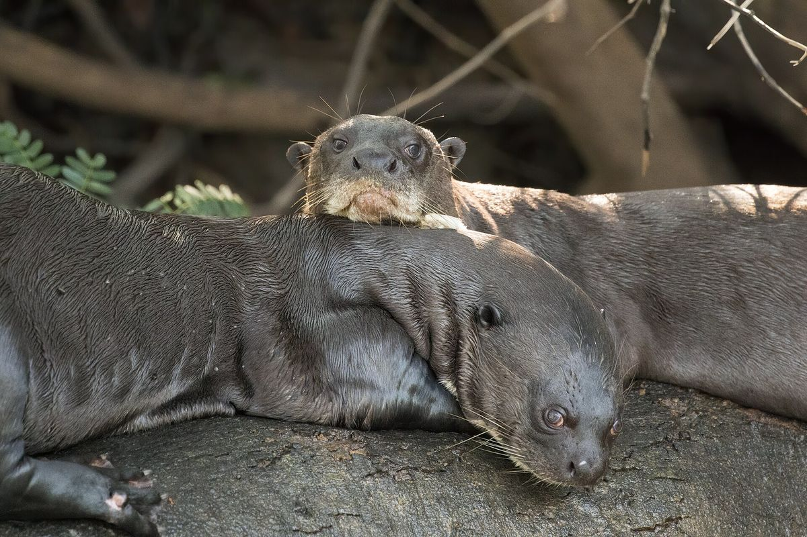
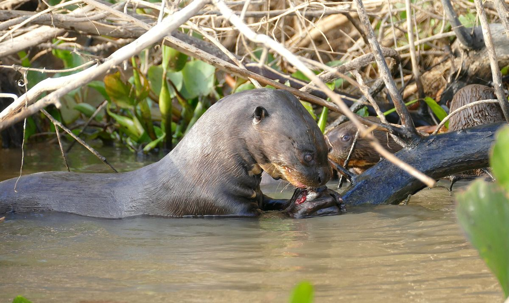
Quem pesca no Pantanal faz parte dessa história. O pesque-e-solte deixa o peixe grande no rio para desovar de novo: em 2019, uma lei de Mato Grosso do Sul proibiu a captura e a venda do dourado e deixou aberta só a modalidade pesque-e-solte. Respeitar a piracema e soltar o peixe com cuidado é o que garante dourado, pacu e cachara na próxima pescaria. Do lado de Mato Grosso, a cachara e a piraputanga estão numa lista de doze peixes nativos que não podem ser pescados para levar embora até 2029.
Todas do Wikimedia Commons, com licença que permite uso comercial. Foram reduzidas para a página.


_male_Three_Brothers_River_5.jpg){kind=link}
_on_nest.JPG){kind=link}
,_Pocon%C3%A9,_Mato_Grosso.jpg){kind=link}
_grazing.jpg){kind=link}
_doe_on_the_road_..._(31560683471).jpg){kind=link}
_(28742110492).jpg){kind=link}
_(28469321432).jpg){kind=link}

.jpg){kind=link}
_eating_fish_..._(48390851682).jpg){kind=link}